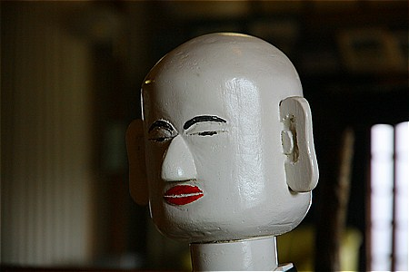

法徳寺のロボット和尚/兵庫県
法徳寺のロボット和尚/兵庫県
加古川市の法徳寺は日蓮宗のお寺である。
一見ごくごく普通のお寺だが、このお寺にはとんでもないお坊さんがいらっしゃるのだ。
住職さんに本堂を案内していただく。
お目当てのお坊さんは本堂内陣の隅にちょこんと座っていた。
こちらのお方です。
ロボット和尚である。
ロボットといって思い浮かべるのはこんなメカ盛り感ムンムンのモノや…
あるいはこんな肉食系のモノ。
…てなロボットとは一切無縁な穏やかロボットなのである。
如何であろう、この全ての煩悩から解き放たれたような超然とした表情。
どこかレトロ感さえ漂う昭和系ヒトガタロボット。
製作者の意図するところではないとは思うのだが、はからずしも精神性を重視する信仰の世界で働くのに最も適したルックスなのかもしれない。

地元の小学生にも人気で、学校の課外学習などでもしばしば見学しにくるという。
住職さんがおもむろにスイッチを入れると…。
鉦を叩きながらお経を唱えている。
もっともお経は背後のラジカセから流れているのだが…（このラジカセの方が遥かにロボっぽいデザインだったりする）。
お経の途中でバチが止まったり音がフニャったりするのはご愛嬌か。
右手に数珠、左手にバチのようなものを持っている。
このお方、十数年前にここ加古川市の南にある播磨町の元国鉄の技術者の方が製作したもので、主に廃材を使用して作ったのだという。
例えば鉦を叩く右手の可動部は車のワイパーを使用している。ラジカセも再生品だし法衣や仏具は勿論住職さんのものを使用している。
一番苦心したのは鉦を叩くピッチをお経に合わせる事だったとか。
実はこのロボット、2体奉納されたのだという。
なぜかというと、同じ機構のロボットを2体作り、作動させることで、もし不具合があった場合、設計上の問題なのか施工上の問題なのかが判明するからなのだという。
つまり2体とも同じ箇所に不具合があれば設計段階でのミスだし、片方だけに不具合がある場合は施工上のミス、ということになる。
それを判断するためだけにわざわざ2体作るという姿勢からは製作者の思想が色濃くにじみ出ていて非常に興味深かった。
ただ、願わくば2体並んで稼動している姿も見たかったような…
そう思うと心なしか寂しそうなロボ和尚なのであった。
そんな住職さんからにわかには信じがたいお話をゲット。
このロボットを製作した方が同タイプのロボットを神社にも奉納しているのだという。
ええ〜！マジでー！
…などと宗教者の言う事を疑っては地獄に落ちるので、住職さんの仰る神社に行ってみることにした。
…というわけで所変わってこちらは法徳寺から10キロほど離れた神社。
近代的なたたずまいの拝殿の中を覗き込んでみると…
おおおおお、いた、いらっしゃったぞおおおおお！！！！！！
ロボットの神官、ここではロボ禰宜と呼んでおこう。
烏帽子を被り緑の衣をまとい、その手にはバチが握られている
どうやら両手で太鼓を叩くタイプのようだ。
法徳寺の初号機タイプに比べ表情なども若干こなれてきたような気がする。耳は相変わらず板状ですけど…。
誰も居ない神社だったので、残念ながら動く様子などは見られなかったのだが、法徳寺の住職さんのハナシによればロボ和尚よりも作るのが大変だったとか。
やっぱりこのロボ禰宜も2体作って奉納したのだろうか。
ロボ和尚とロボ禰宜、宗教は違えど真面目に鳴り物を叩くそのロボ兄弟の姿勢はある種宗教者に通ずるものがあるのかもしれない。
そういう意味ではロボットって案外宗教者向きなのかもしれないっすねー。
…いや、別に宗教者がロボットみたいだと言っているわけではなくて…
2011.03.
珍寺大道場 HOME